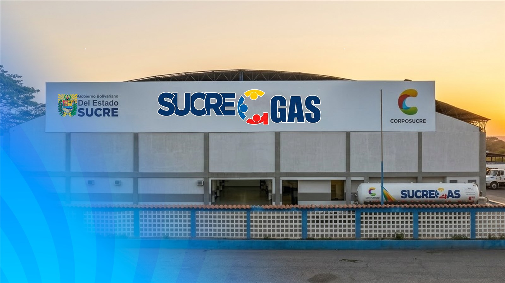

Una empresa al servicio del estado Sucre
SucreGas es la empresa encargada de la distribución de Gas Licuado de Petróleo (GLP) en la entidad. ¡Energía que mueve a Sucre!
Quiénes somos
Somos la empresa regional responsable de llevar gas doméstico a los hogares y de atender las necesidades de comercios e industrias de los 15 municipios del estado Sucre.
A través de jornadas de distribución masiva, el Plan Llenado Exprés y la coordinación con los CLAP, trabajamos para que el gas llegue de forma oportuna y segura a las comunidades, desde Cumaná hasta la península de Paria.

Misión
Garantizar la distribución oportuna y segura de GLP a las familias, comercios e industrias del estado Sucre.
Visión
Consolidar una red de distribución moderna y confiable que llegue a cada rincón del estado.
Valores
Seguridad ante todo, compromiso con las comunidades y cercanía con cada familia sucrense.
Proyectos en marcha
Iniciativas que amplían la cobertura y acercan el servicio a las comunidades.
Plan Llenado Exprés
Puntos de llenado temporales en comunidades y penínsulas para agilizar la entrega de cilindros a miles de familias.
Ampliación de flota y despacho
Fortalecimiento de la capacidad de transporte para alcanzar más municipios y sectores rurales cada semana.
Gas por tubería y granel
Desarrollo de sistemas de gas para urbanismos, edificios y clientes de alto consumo con mantenimiento certificado.
Coordinación con los CLAP
Articulación con los consejos comunales para que el gas llegue de forma organizada a cada sector.
Presentes en los 15 municipios
- Sucre (Cumaná)Ciclo de atenciónAnterior: 40Actual: 38
- Bermúdez (Carúpano)Ciclo de atenciónAnterior: 46Actual: 38
- Valdez (Güiria)Ciclo de atenciónAnterior: 89Actual: 30
- Montes (Cumanacoa)Ciclo de atenciónAnterior: 57Actual: 54
- Ribero (Cariaco)Ciclo de atenciónAnterior: 63Actual: 63
- Cruz Salmerón Acosta (Araya)Ciclo de atenciónAnterior: 40Actual: 37
- Mejía (San Antonio del Golfo)Ciclo de atenciónAnterior: 60Actual: 55
- Cajigal (Yaguaraparo)Ciclo de atenciónAnterior: 47Actual: 43
- Arismendi (Río Caribe)Ciclo de atenciónAnterior: 62Actual: 63
- Benítez (El Pilar)Ciclo de atenciónAnterior: 45Actual: 43
- Libertador (Tunapuy)Ciclo de atenciónAnterior: 40Actual: 35
- Mariño (Irapa)Ciclo de atenciónAnterior: 100Actual: 30
- Bolívar (Marigüitar)Ciclo de atenciónAnterior: 60Actual: 50
- Andrés Eloy Blanco (Casanay)Ciclo de atenciónAnterior: 44Actual: 21
- Andrés Mata (San José)Ciclo de atenciónAnterior: 46Actual: 34
Contacto
Escríbenos, llámanos o visítanos. Estamos para atenderte.
Teléfono
(0293) 000-0000
Correo
contacto@sucregas.gob.ve
Sede
Av. Perimetral Cacique Maragüey, Cumaná
Redes sociales
@sucregas